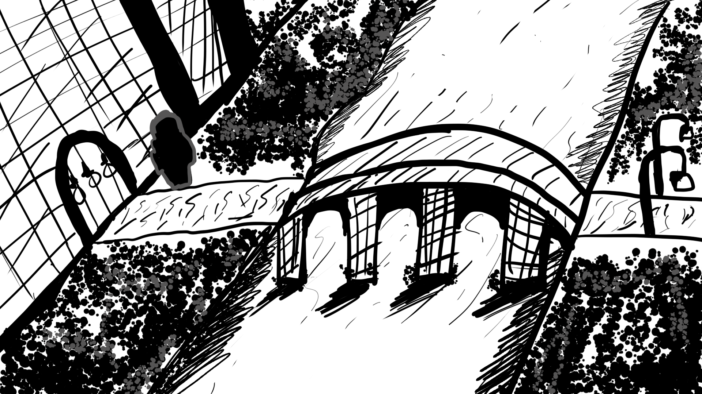
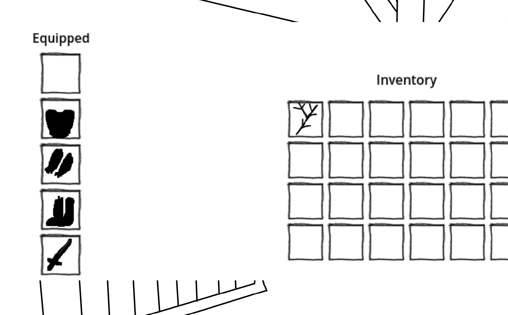
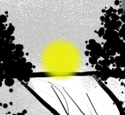

You find yourself in a mysterious castle with no memory of how you
got here. Your journey begins in the castle’s outer grounds, and you
must explore to uncover the secrets of this ancient place.

img
Getting Started
Basic Controls
Mouse: Navigate and interact with
objects
E or I: Open your inventory 
ESC: Open the game menu
Navigation: Click yellow circles in the screen
to move around or interact with items 
Your Goal
Your main objective is to reach the Castle City and discover the
truth about your past. Along the way, you’ll meet interesting
characters, complete quests, and gather equipment to help you on your
journey.
The Item Shop
How to Access
Reach Castle City
Look for the item shop button
Click to enter the shop
How to Buy Items
Browse: Look at the items in the shop grid
Select: Single-click an item to highlight it (white
outline appears)
Purchase: Double-click the highlighted item to buy
it
Auto-Equip: Items automatically go to the correct
equipment slot
Shopping Tips
Check your gold: The shop shows your current gold
amount
Start with free items: The stick is free and
useful
Save for armor: Armor provides good protection
Visual feedback: Green messages mean success, red
means not enough gold
Your Inventory
Equipment Slots
Your character has five equipment slots:
Helmet: Protects your head
Armor: Protects your body
Hands: Protects your hands
Leggings: Protects your legs
Weapon: Your combat equipment
How to Use
Open Inventory: Press E or I
View Equipment: See your equipped items in the left
panel
View Items: See collected items in the main
grid
Auto-Equipment: Items automatically equip when you
buy them
Quests and Rewards
Go around the city for quests, quests will give you coins for
reward.
Tips for Success
Exploration
Look carefully: Navigation buttons can be hidden in
the scenery
Talk to everyone: NPCs provide important
information and quests
Take your time: Don’t rush - the castle has many
secrets
Combat and Equipment
Start with the stick: It’s free and better than
nothing
Save your gold: Don’t spend everything at once
Prioritize armor: Protection is valuable in this
castle
Check your inventory: Make sure items are properly
equipped
Navigation
Follow the path: Each level leads to the next
Look for buttons: Navigation buttons are usually
visible
Don’t get lost: The castle is designed to guide you
forward
Troubleshooting
Common Issues
Can’t find navigation: Look carefully around the
edges of the screen
Not enough gold: Complete quests to earn more
gold
Items not equipping: Check your inventory (E or I
key)
Shop not working: Make sure you’re in Level 6
Getting Help
Check this guide: Most answers are here
Explore thoroughly: The solution is usually
nearby
Talk to NPCs: They often provide hints
The Castle’s Story
What You Know
You woke up in this castle with no memory
The place feels strangely familiar
There’s a mystery about a guardian
The castle has been through troubled times
What to Discover
Your true identity
The castle’s history
The role of the guardian
The source of the darkness
Credits
Castle Journey is an adventure game that rewards exploration and
careful thinking. Take your time, enjoy the atmosphere, and uncover the
secrets of this mysterious castle!